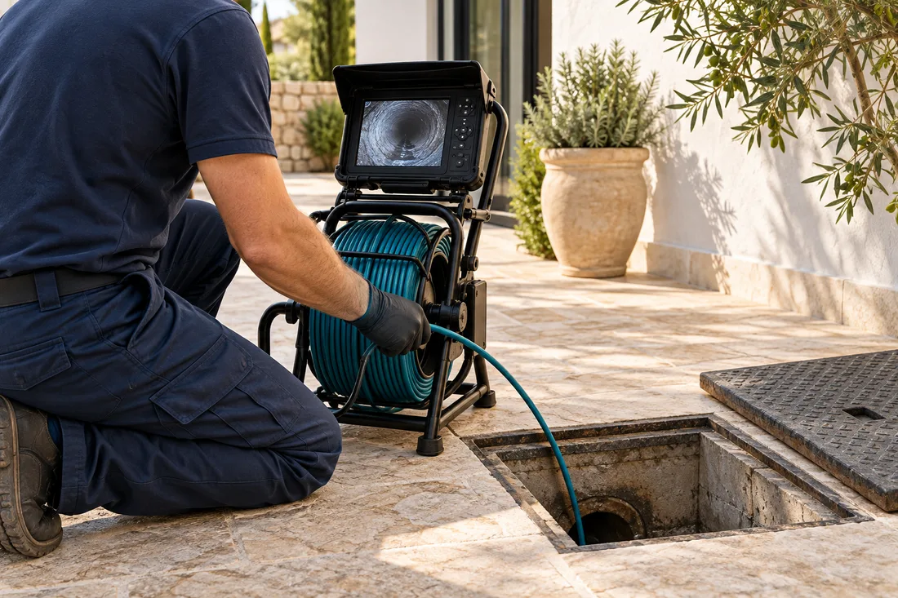

Soluciones profesionales para atascos e inspección de tuberías con cámara. Atención urgente en Alicante, Benidorm, Torrevieja, Elche, Altea y alrededores.
Consulta disponibilidad y presupuesto antes de la intervención.

Claridad desde el primer contacto.
Desatascar cuando hay una urgencia e inspeccionar para entender qué ocurre. No realizamos reformas ni fontanería general.
La cámara permite observar el interior de la conducción sin abrir toda su longitud y orientar el siguiente paso. Su alcance depende del diámetro, los giros, el acceso y la visibilidad.
Al llamar confirmamos la disponibilidad para tu dirección y te damos una estimación. No prometemos un tiempo de llegada fijo que no podamos confirmar.
{{ s.text }}
Confirmamos cobertura y disponibilidad para tu dirección antes del desplazamiento.
No indicamos oficinas físicas en estas localidades.
Ver todas las zonasInformación clara para decidir con tranquilidad. Si tu caso es distinto, llámanos y lo valoramos.
{{ f.a }}
Cuéntanos qué ocurre y dónde estás. Te decimos cómo seguir.